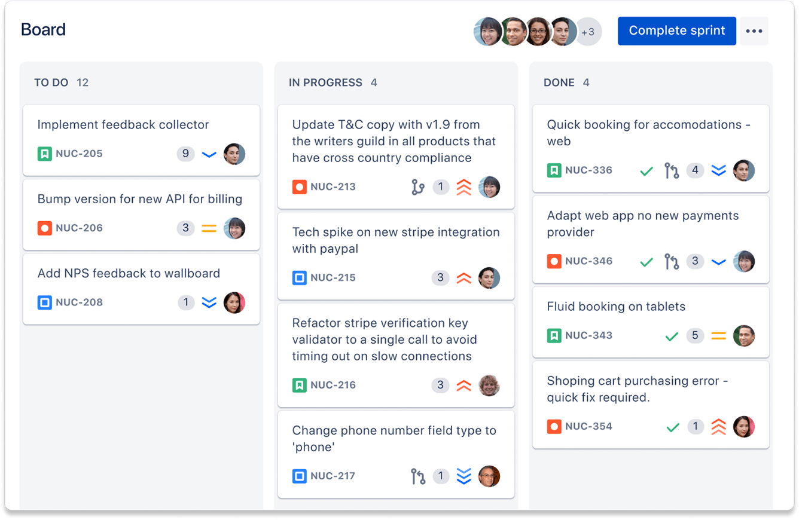

Agent Teams¶
- 팀 리더와 팀원이 함께 작동하는 여러 세션
Agent Teams는 여러 Claude Code 세션이 하나의 작업 목록을 공유하며 서로 직접 메시지를 주고받는 협업 방식입니다.
한 세션이 팀 리더를 맡아 작업을 나누고 결과를 종합하며, 나머지 팀원들은 각자의 컨텍스트 윈도우에서 독립적으로 작동합니다.
왜 필요한가?¶
subagent는 메인 에이전트에게 작업의 결과물을 보고할 뿐, subagent 간 통신을 할 수 없습니다.
subagent 기능으로는 문제를 여러 각도에서 살펴보며 토론을 하며 결론을 내릴 수 없습니다.
반면 Agent Teams는 팀원끼리 직접 메시지를 주고받을 수 있습니다.
병렬 탐색/작업의 효과성이 강조되는 작업일수록 Agent Teams 의 기능이 어울립니다.
- 연구 및 검토 : 여러 팀원이 문제의 다양한 측면을 동시에 조사한 후 서로의 발견을 공유하고 도전할 수 있습니다
- 새로운 모듈 또는 기능 : 팀원들이 각각 별도의 부분을 소유하면서 서로 간섭하지 않을 수 있습니다
- 경쟁하는 가설로 디버깅하기 : 팀원들이 다양한 이론을 병렬로 테스트하고 더 빠르게 답에 수렴합니다
- 교차 계층 조율 : 프론트엔드, 백엔드, 테스트에 걸친 변경 사항으로, 각각 다른 팀원이 소유합니다
에이전트 팀은 팀원간 조율을 하는 작업이 들어가기 때문에 단일 세션보다 훨씬 더 많은 토큰을 사용합니다.
Agent Teams는 팀원들의 R&R을 독립적으로 구성했을시 가장 잘 작동합니다.
순차적 작업, 동일 파일 편집, 또는 많은 종속성이 있는 작업의 경우 단일 세션이나 subagent가 더 효과적입니다.
Subagent와 무엇이 다른가¶
{kind=link}
두 방식 모두 작업을 병렬로 나누지만, 워커끼리 통신해야 하는지가 갈림길입니다.
| Subagents | Agent Teams 팀 | |
|---|---|---|
| 컨텍스트 | 자신의 컨텍스트 윈도우; 결과는 호출자에게 반환됨 | 자신의 컨텍스트 윈도우; 완전히 독립적 |
| 통신 | 메인 에이전트에게만 결과 보고 | 팀원들이 서로 직접 메시지 전송 |
| 조율 | 메인 에이전트가 모든 작업 관리 | 자체 조율을 통한 공유 작업 목록 |
| 최적 용도 | 결과만 중요한 집중된 작업 | 논의와 협업이 필요한 복잡한 작업 |
| 토큰 비용 | 낮음 : 결과가 메인 컨텍스트로 요약됨 | 높음 : 각 팀원이 별도의 Claude 인스턴스 |
구성 요소¶
에이전트 팀은 다음으로 구성됩니다.
{kind=link}
Agent Teams 는 작업을 칸반으로 방식으로 관리합니다.
칸반(Kanban)이란? 업무 상태를 시각적으로 표현하고 관리하여 작업 효율성을 높이는 프로젝트 관리 방법론입니다.
Atlassian 사의 kanban 이 대표적인 예 입니다.

{kind=link}
Agent Teams의 작업은 대기 중 / 진행 중 / 완료 중 하나의 상태를 가집니다.
작업끼리 의존 관계를 가질 수도 있어서, 앞 작업이 끝나지 않으면 뒤 작업을 요청할 수 없습니다.
활성화 방법¶
CLAUDE_CODE_EXPERIMENTAL_AGENT_TEAMS 환경 변수를 1로 설정하면 켜집니다.
shell 의 환경변수나 settings.json 설정 파일에 넣습니다.
켠 뒤에는 자연어로 원하는 작업과 팀원 구성을 설명하면 됩니다.
기업가치를 저평가/적정/고평가로 판정하려고 합니다.
세 팀원을 만들어 다른 각도에서 조사하세요:
- 정량 지표(재무제표·주가배수)를 분석하는 팀원
- 정성 자료 (애널리스트 리포트·뉴스)를 분석하는 팀원
- 두 팀원의 결론에 근거 부족을 파고들며 반박하는 팀원.
세 역할이 서로 기다리지 않고 독립적으로 조사할 수 있고, 마지막 팀원이 앞 두 팀원의 결론에 직접 반박하므로 이 예시가 잘 맞습니다.
Agent Teams 사용시 참고할 점¶
Agent Teams가 subagent보다 토큰 소모가 큽니다¶
팀원마다 별도의 컨텍스트 윈도우를 쓰므로 토큰 비용이 팀원 수만큼 늘어납니다.
일상적인 작업이라면 단일 세션이나 subagent가 더 경제적입니다.
팀원은 리더의 대화 기록(context)를 이어받을 수 있나요?¶
팀원은 생성될 때 CLAUDE.md·MCP 서버·skill 같은 프로젝트 컨텍스트는 그대로 로드하지만, 리더가 그때까지 나눈 대화 기록은 넘겨받지 못합니다.
그래서 팀원을 만드는 프롬프트에 작업에 필요한 세부 사항을 직접 적어 줘야 합니다.
세션 하나에 팀을 하나만 만들 수 있습니다.¶
세션은 하나의 팀만 구성이 가능하며, 리더만 팀원을 가질수 있고, 팀원은 자신만의 팀원을 만들지 못합니다.
즉, 계층적 위계 구조는 구조적으로 막아놓았습니다.
물론, 이를 우회하여 계층적으로 위계 구조를 구성하는 것이 가능합니다만, 조직의 위계 구조가 깊어질 수록 계층간 의도 전달이 안되는 문제가 발생합니다.
팀 리더와 팀원간 메세지를 지속적으로 주고 받으려면?¶
agent teams 기능을 이용하여 팀 리더가 팀원을 spawn 한 이후, 팀원의 작업이 끝나면 팀원 세션은 비활성화 되고, 이후에 메세지를 수신할 수 없습니다.
이를 방지 하기 위해서는 팀 리더 / 팀원 모두 세션을 활성화 시킨 상태에서 작업을 하도록 해야 합니다.
이렇게 구성해 놓으면, 구성원 간 메일박스를 통해 송/수신한 모든 메세지들을 확인하는 것도 가능합니다.
제한 사항¶
Agent Teams는 실험적 기능이라 다음 제약이 남아 있습니다.
- 세션을 재개해도 팀원은 복원되지 않습니다. 리더에게 새 팀원을 다시 만들도록 요청해야 합니다.
- 팀원이 작업을 완료로 표시하지 못해 뒤 작업이 막힐 수 있습니다.
- 팀원 종료는 현재 턴이 끝난 뒤에 이뤄져 시간이 걸릴 수 있습니다.
- 리더는 세션이 끝날 때까지 고정됩니다. 팀원을 리더로 바꾸거나 리더십을 넘길 수 없습니다.
실습해보기¶
지금까지 설명한 개념을 직접 실습해 볼 수 있는 예제가 examples/agent-teams-practice/에 있습니다.
이 예제는 앞서 다룬 "경쟁하는 가설로 디버깅하기" 시나리오를 재현합니다. 서로 무관한 버그 세 개가 든 작은 Python 모듈을 두고, 팀원 세 명이 각자 다른 함수를 맡아 병렬로 원인을 조사합니다.
| 팀원 | 담당 | model | effort |
|---|---|---|---|
| A | 경계값 문제 | Haiku | low |
| B | 부동소수점 비교 문제 | Sonnet | medium |
| C | 상태 공유 문제 + A·B 결론 반박 | Opus | high |
model은 .claude/agents/에 미리 정의해 둔 팀원 유형의 model 필드로 지정합니다.
effort는 다릅니다 - 팀원은 생성 시점에 리더의 effort를 그대로 상속받고, 정의 파일이나 스폰 프롬프트로 개별 지정할 수 없습니다. 팀원마다 다른 effort를 쓰려면 팀원을 만든 뒤 각 팀원 세션에 직접 들어가 /effort로 이후 턴의 effort를 설정합니다.
자세한 실행 순서와 관찰 포인트는 examples/agent-teams-practice/README.md에서 다룹니다.
아래는 이 실습을 실제로 진행한 녹화본입니다.